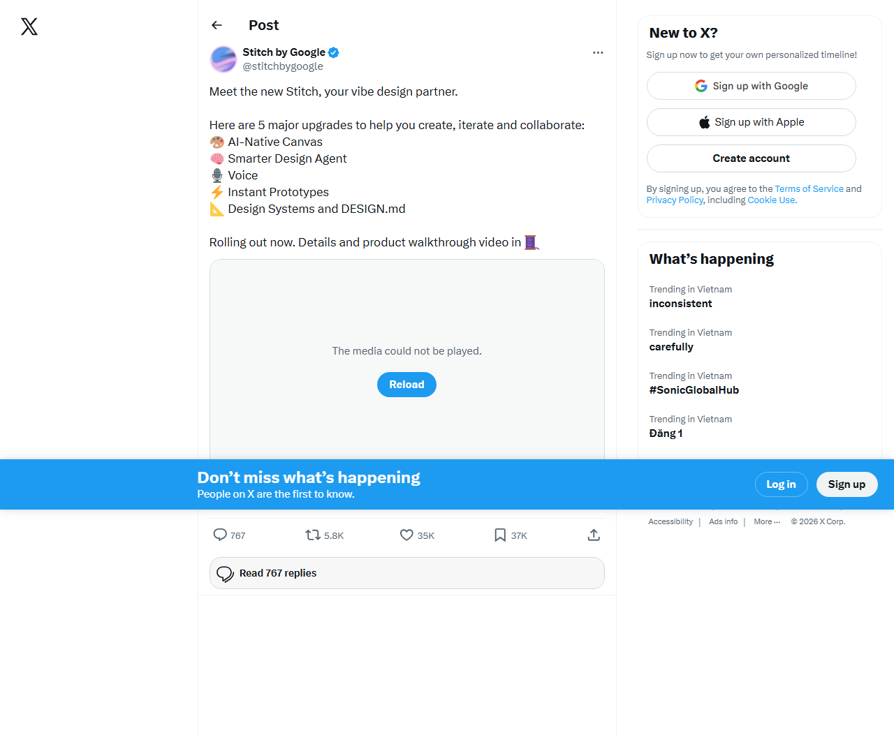
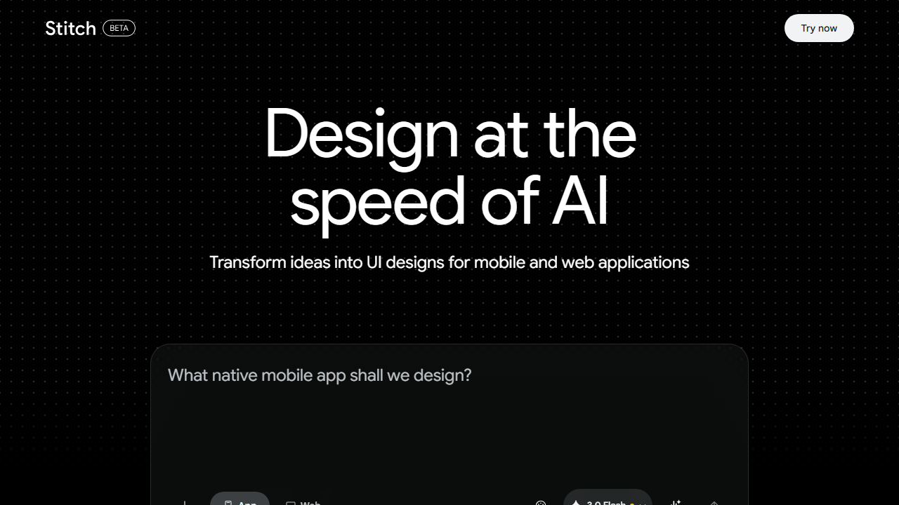
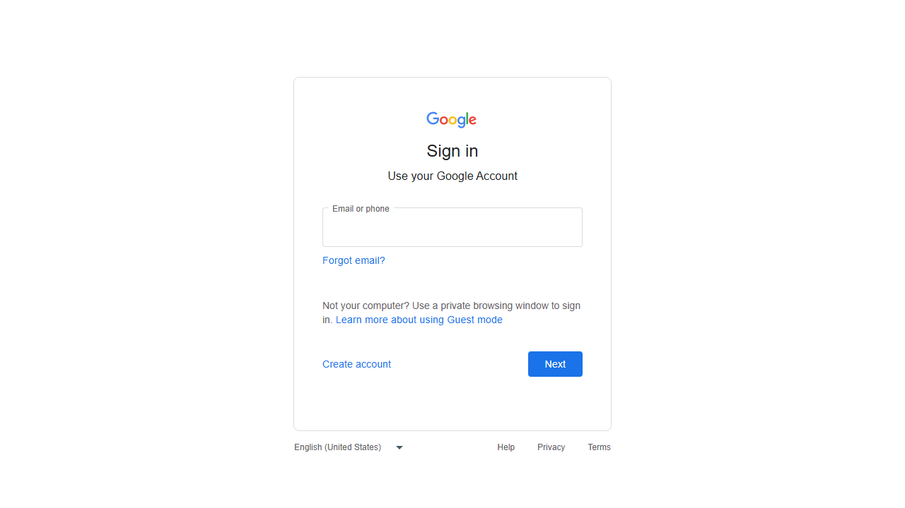
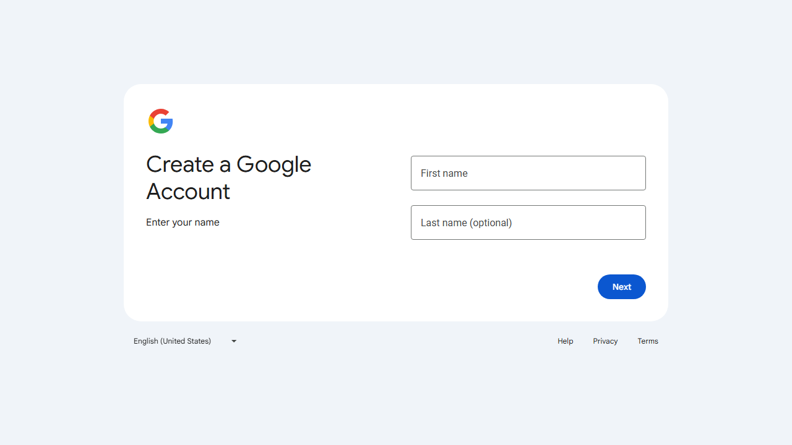

1) Tổng quan 5 nâng cấp mới của Google Stitch
Stitch (Google Labs) được mô tả là “AI-native software design canvas” giúp biến natural language thành thiết kế UI chất lượng cao, và đang được nâng cấp theo hướng: canvas hiểu ngữ cảnh, agent suy luận, tương tác nhanh (prototypes), voice, và hệ thống thiết kế dùng được xuyên công cụ.
1. AI-Native Canvas
- Thiết kế lại giao diện canvas dạng infinite (để “diverge & converge”).
- Cho phép đưa nhiều loại context vào canvas:
images,text, và thậm chícode.
2. Smarter Design Agent + Agent manager
- Agent có khả năng “reason across the project’s evolution”.
- Agent manager giúp theo dõi tiến trình và làm song song nhiều hướng thiết kế.
3. Voice (“Vibe design”)
- Nói trực tiếp với canvas để nhận critique hoặc cập nhật thiết kế theo lời thoại.
- Ví dụ được nêu: “give me three different menu options”, “show me this screen in different color palettes”.
4. Instant Prototypes (“Prototypes” / Play)
- “Stitch” nhiều screen thành một prototype chạy được.
- Tạo tương tác & user flows; và có cơ chế suy ra screen tiếp theo dựa trên click.
5. Design Systems + DESIGN.md
DESIGN.mdlà file markdown “agent-friendly” để export/import rules thiết kế.- Có thể trích xuất design system từ URL và dùng lại giữa các project/công cụ.
Khớp với tweet của Stitch by Google
Ở ảnh tweet, Google liệt kê đúng 5 nâng cấp: AI-Native Canvas, Smarter Design Agent, Voice, Instant Prototypes, và Design Systems + DESIGN.md.

2) Hands-on trial: các bước mình đã làm (kèm ảnh)
Lưu ý tính “hands-on”: Mình thực sự chạy thử trên máy bằng Playwright (headless)
để truy cập web và chụp màn hình theo từng bước, sau đó lưu ảnh vào thư mục images/ của blog này.
Phần sau là mô tả đúng các bước/điểm mình quan sát được từ ảnh.
2.1 Bước 1: Xác nhận danh sách 5 nâng cấp
2.2 Bước 2: Mở Stitch web app (landing page)

https://stitch.withgoogle.com/, thấy màn landing và card gợi ý prompt (“What native mobile app shall we design?”) + nút “Try now”.2.3 Bước 3: Thử tìm ô nhập prompt trong phiên tự động
Mình cố gắng để automation nhận diện textarea/textbox hoặc điều hướng để vào vùng nhập prompt.
Kết quả: không thấy được ô nhập prompt trong phiên headless này.

2.4 Bước 4: Bấm “Try now” nhưng chưa chạm được canvas/prototypes

2.5 Bước 5: Bấm “Try now” (coordinate click) -> bị chặn bởi Google sign-in

2.6 Bước 6: Flow tạo tài khoản Google

2.7 Bước 7: Thử “Guest mode”/lối tắt trên trang sign-in nhưng không vào được

Hệ quả cho “verify how it works”
Vì bị chặn ở bước sign-in trong phiên automation, mình chưa thể test trực tiếp hành vi: Play/Prototypes (user flow chạy như thế nào), voice/vibe design (critique realtime ra sao), và DESIGN.md (export/import rules hoạt động thế nào).
3) Mình xác nhận được gì & chưa xác nhận được gì
Đã xác nhận được (có ảnh chứng cứ)
- Tweet của Stitch by Google có liệt kê đúng 5 nâng cấp mới.
- Landing của Stitch có card gợi ý prompt + nút “Try now”.
- Khi đi tới bước “Try now”, phiên thử nghiệm của mình bị chuyển sang Google sign-in/account creation, nên không vào được canvas để chạy tính năng mới.
Chưa xác nhận được (chưa tới canvas)
- Prototypes/Play chạy interactive flow như thế nào.
- Voice/Vibe design tạo critique/biến thể UI realtime ra sao.
- DESIGN.md xuất/nhập quy tắc thiết kế trong UI thực tế.
- Design agent + Agent manager tạo ra output ra sao sau khi có canvas/đầu vào.
4) Quan điểm cá nhân & cách áp dụng vào daily workflow
Dựa trên mô tả chính thức + những gì mình nhìn thấy ở landing, mình đánh giá Stitch đang đi đúng hướng: biến “ý tưởng UI” thành một quá trình gồm canvas + agent + prototype + design system. Đây là chuỗi rất hợp với workflow của người làm sản phẩm: từ “muốn gì” -> “thấy được luồng” -> “giữ consistency”.
4.1 Cách mình sẽ áp dụng (khi vào được canvas/prototypes)
- Giai đoạn ideation: Dùng “vibe design” theo intent (business objective / user feeling) để tạo 2–3 hướng layout nhanh hơn.
- Giai đoạn kiểm chứng: Dùng “Instant Prototypes/Play” để validate flow (home -> pricing -> signup) trước khi mất thời gian implement.
- Giai đoạn chuẩn hóa: Dùng
DESIGN.mdnhư một “source of truth” cho rules (spacing, tokens, pattern) để các màn hình mới không bị drift style. - Giai đoạn phối hợp: Nếu voice/vibe design hoạt động đúng như công bố, mình sẽ dùng để convert feedback trong buổi brainstorm thành yêu cầu UI rõ ràng.
Điểm thực tế (từ trải nghiệm của mình)
Trong phiên automation của mình, Stitch bị gate bởi Google sign-in nên mình không test được prototypes/voice/DESIGN.md. Vì vậy, đối với daily workflow của cá nhân mình: mình sẽ dùng Stitch theo kiểu “feature-check” khi đã đăng nhập được, và coi nó như công cụ tăng tốc cho các vòng lặp UI thay vì một bước tự động hóa hoàn toàn.
5) Nguồn tham khảo
- Google Labs — Introducing “vibe design” with Stitch
- Google Labs — Stitch from Google Labs gets updates with Gemini 3